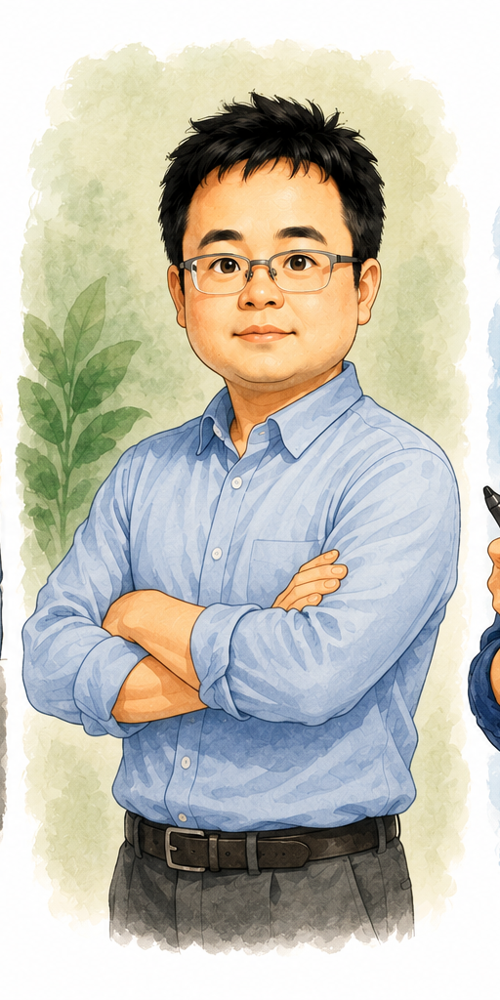
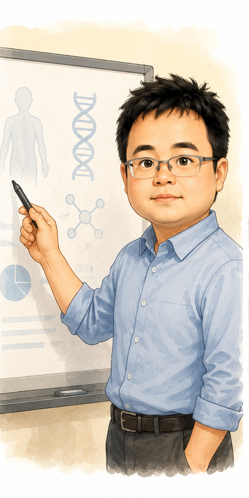
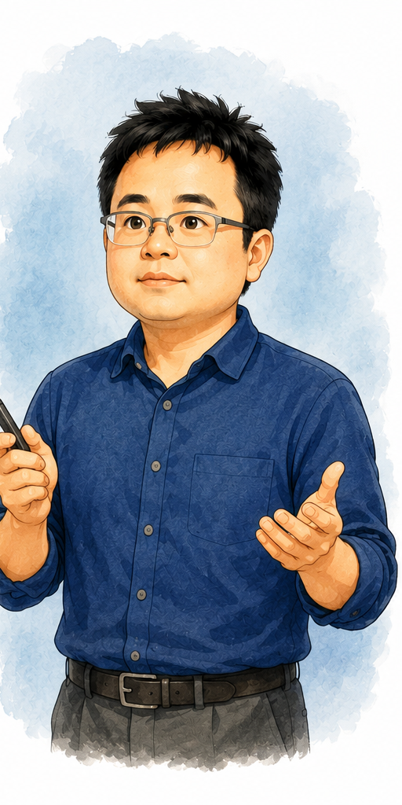
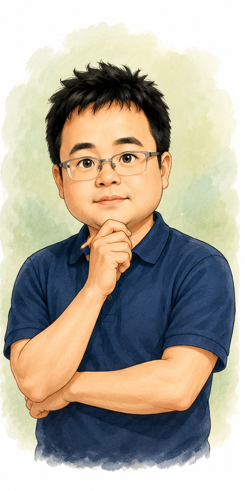

彰師大：制度型成長
推廣收入近年增長明顯，師培、第二專長、學分與證照課程形成穩定需求。
依 2026-06-23 公開網站、預算書、決算書與課程頁快照整理。課程頁快照代表公開頁面可見規模，不等同年度實際開班數、報名人次或營收。
推廣收入近年增長明顯，師培、第二專長、學分與證照課程形成穩定需求。
課程數、價格帶、狀態標示與高價產品線完整，具事業部營運特徵。
醫學特色強，但收入約千萬上下，成人高價與機構委訓仍有放大空間。
| 學校 | 近三年產值/收入 | 公開課程規模快照 | 判讀 |
|---|---|---|---|
| 彰師大 | 112 年度 30,609,496 元；113 年度 38,803,712 元；114 年度 40,914,983 元。 | 歷史課程明細連結約 666 筆；目前可報名解析 24 筆。 | 制度穩、教育與師培特色強，收入增幅突出。 |
| 東海 | 110-112 學年平均 93,590 千元/年；112、113、114 學年度預算趨勢分別約增 2.1%、1%、9%。 | API 可解析 312 筆；招生中 288、確定開課 117、已額滿 24；價格約 300 至 175,500 元。 | 三校中規模最大、市場化最高、產品線最完整。 |
| 中山醫 | 111 學年度 10,400,543 元；112 學年度 9,730,499 元；113 學年度 9,753,500 元；114 學年度預算 12,000,000 元。 | 首頁分類：研究所學分班 5、大學部學分班 8、專業證照 3、養生保健 1、國高中營隊 8、政府補助 5。 | 醫學特色鮮明，但產值約為東海一成、彰師大四分之一，成長空間大。 |
強項：師範大學品牌、師培資源、法規審查與經費制度完整，第二專長與學分班具剛性需求。
弱勢：市場化平台、價格/名額呈現、企業客製與高價國際課程包裝不如東海。
強項：搜尋、價格、優惠、額滿、確定開課狀態清楚，產品線橫跨語言、證照、企業培訓、政府補助與生活休閒。
弱勢：課程數多造成品質控管壓力，且高度市場化使民間機構競爭更直接。
強項：醫學、牙醫、護理、營養、心理、微免、職安等專業門檻高，不易被一般推廣教育機構複製。
弱勢：推廣收入約千萬上下，課程數與產品線深度不足，資訊分散於首頁、Q&A、PDF 與課程頁。
可放大：把醫學營隊的品牌流量延伸到成人證照、醫療職能、長照、月子照護、食品安全、企業職安健康促進與醫療 AI。
需控管：高中生營隊參與證明限制、家長期待、招生文宣與證書發放條件。
重點是補齊現有課程招生頁、繳費流程與轉換率，先讓 114 學年度預算目標穩定達成。
以成人證照、醫療職能、醫院/長照/企業委訓拉高客單價與重複開班率。
建立醫學特色推廣教育品牌，逐步接近彰師大規模。
本段依三校公開網站可見資訊整理。彰師大與中山醫揭露成員/職掌較完整；東海推廣部公開的是部門入口、服務功能、辦公時間與平台化課程資訊，未見同等詳細的人員名冊，因此以下將「官方揭露」與「營運功能推估」分開呈現。

官方行政團隊列出院長室、教學服務組、進修教育研究中心、總務及推廣組。推廣教育相關工作主要分散於進修教育研究中心與總務及推廣組，並由院級單位統籌。
組織型態：學院制、分工細、制度治理能力強。
官網呈現推廣部品牌、課程搜尋、證書驗證、場地租借、常見表單、校本部窗口與長時間辦公服務。從 312 筆公開課程與多產品線推估，其組織運作需要平台營運、課程企劃、客服招生、金流行政與合作講師管理。
組織型態：市場平台制、前台服務強、課程產品經理化。
推廣教育網站列示主任負責推廣教育發展政策擬定及執行，三位組員分別承接產業人才投資方案、非學分/學分獨立開班、營隊、採購核銷、招生廣告、預算、報部資料、TTQS、職前訓練與隨班附讀。
組織型態：教務行政支援型、人力精簡、承辦範圍廣。
| 面向 | 彰師大 | 東海 | 中山醫 | 對中山醫的含意 |
|---|---|---|---|---|
| 組織層級 | 進修學院，院級統籌。 | 推廣部，對外品牌明確。 | 教務處下推廣服務組。 | 若要擴大產值，需讓推廣服務組具備更強的產品企劃與市場營運授權。 |
| 人力揭露 | 行政團隊公開列示約 18 個職務/人員。 | 未見完整人員名冊；公開服務入口與平台功能。 | 公開列示主任 1 位、組員 3 位。 | 中山醫目前人力相對精簡，若收入目標提高，需避免所有工作都落在同一組員群。 |
| 核心職能 | 在職班、學分班、第二專長、委訓、審查、法規、總務推廣。 | 課程平台、招生客服、價格與優惠、證書驗證、場地租借、跨類別產品線。 | 學分班、非學分班、營隊、政府委訓/補助、預算、報部、TTQS、招生廣告。 | 中山醫需要把「承辦制」升級為「產品線負責制」。 |
| 管理風險 | 分工細但流程可能較重。 | 課程量大，品質與講師管理壓力高。 | 人力少、任務廣，易產生瓶頸與知識集中風險。 | 應建立 SOP、課程提案模板、收益試算、CRM 與儀表板，降低個人依賴。 |
若短期人力無法增加，先用模板化與數位化減壓：課程提案表、損益試算表、標準課程頁、報名繳費 SOP、課後問卷與月報儀表板。
以 1,200 萬收入目標可先維持精簡組織；若挑戰 1,800-2,500 萬，至少要把產品企劃、招生營運、行政品保三類工作切開，避免同一承辦同時扛招生、核銷、報部與客服。
分析三校進修推廣教育的營運主體定位與商業營運模式，探討如何在制度與市場需求間取得最佳平衡。

以進修學院為統籌核心，公開法規、經費收支、審查小組、招生計畫書等文件。營運重點是制度治理、開課審查、行政管理費與場地費提撥。
適合借鏡：後台制度、開課申請、審查與經費管理。
以推廣部作為對外品牌，課程平台提供搜尋、分類、地點、日期、價格、早鳥、團報、確定開課與額滿狀態。
適合借鏡：課程產品化、招生頁面、學員服務與證書驗證。
以教務處推廣服務組為行政窗口，結合醫學、健康、生命科學、營隊與政府補助課程。常由學系主辦，推廣服務組協辦行政。
發展方向：醫學特色產品線加上更集中化的行政與平台服務。
| 學校 | 承辦單位定位 | 主要營運模式 | 課程組合 | 對外入口 |
|---|---|---|---|---|
| 彰師大 | 進修學院統籌 | 制度化、法規化、校內單位提案導向 | 證照、藝文、資訊、語言、營隊、企管、師資培訓、政府委訓、教師進修學分班、理工農醫等 | 進修學院官網＋推廣教育管理系統 |
| 東海 | 推廣部獨立品牌窗口 | 市場化、平台化、產品線導向 | 人文藝術、經管貿易、企業委訓、創意設計、財金研訓、政府委訓、語言、樂齡、投資理財、產學培訓等 | 推廣部課程平台＋學員登入＋場地租借＋證書驗證 |
| 中山醫 | 教務處推廣服務組 | 教務行政型窗口，結合醫學大學特色與各系所專業 | 學分班、非學分班、專業證照、養生保健、國高中營隊、政府委訓、政府補助 | 推廣教育網站＋會員註冊/登入＋LINE/Facebook＋教務處 Q&A |
深入探討各校在招生宣傳、金流收費、退費機制與研習證書等具體推廣教育行政作業的執行差異。

彰師大常採「先線上報名，成班或錄取後再寄繳費單」；東海以推廣部平台與會員流程承接，政府補助課程接職訓 E 網；中山醫有線上、現場與通訊報名，營隊常採報名時間排序與備取遞補。
彰師大常見早鳥、校內生、校友、舊生優惠；東海價格呈現最完整，常列原價、早鳥、團報與補助後自付額；中山醫則依營隊與醫學特色課程提供早鳥、清寒或低收優惠。
彰師大採教育部推廣教育規範脈絡：開班前九成、未逾三分之一半數、逾三分之一不退。東海依課程類型細分，且退費申請需紙本親簽寄回。中山醫規則清楚，但常分散在課程頁與簡章。
彰師大常以出席比例作為研習證書門檻；東海設證書驗證與補發/成績單申請；中山醫可發推廣教育結業證書，但高中營隊需注意教育部對參與證明的限制。
| 面向 | 中山醫現況 | 彰師大可參考處 | 東海可參考處 |
|---|---|---|---|
| 組織治理 | 教務處推廣服務組，偏行政支援與課程協辦 | 建立完整推廣教育要點、經費收支、審查小組、招生計畫書流程 | 以推廣部品牌統一對外，課程產品化與平台化 |
| 課程特色 | 醫學、健康、營隊、政府補助具優勢 | 強化校內各系所開課提案制度與審查 | 強化市場課程分類、價格策略、確定開課狀態 |
| 報名繳費 | 線上、現場、通訊並行；學分班現場仍見現金流程 | 先報名、成班/錄取後 E-mail 繳費單，降低退費量 | 學員登入、線上課程搜尋、繳費通知、依繳費順序錄取 |
| 退費行政 | 規則清楚，但分散在課程頁與簡章 | 與教育部規範一致，可制度化成統一公開頁 | 退費申請、證書補發等集中於常見表單 |
| 數位服務 | 有會員、LINE、Facebook，但流程資訊可再集中 | 法規、表單、申請文件集中頁 | 證書驗證、場地租借、常見表單入口 |
建議以制度後台、平台前台與醫學特色產品線三件事同步推進，先降低行政負擔，再提高招生轉換與課程單價。

集中推廣教育實施要點、開班申請、講師聘任、收費退費、結業證書、保險、未成年家長同意書與常用表單。
建立固定頁面，所有課程頁只連結統一規範；課程若有特殊條件，再於課程頁加註例外，降低爭議與承辦壓力。
將現場現金與通訊報名逐步轉向錄取後銷帳編號、ATM、網銀或線上繳費，以降低對帳、保管與退費行政成本。
加入招生中、確定開課、即將額滿、已額滿、停開等狀態，並清楚列原價、早鳥、校友、舊生、清寒與補助價格。
將課程整理為醫學探索營、醫療職能與證照、成人健康素養、政府補助/委訓、校內跨域微課程等系列。
導入結業證書驗證、補發申請、中英文證明申請與出席紀錄保存規則，同時明確標示高中營隊不得授予參與證明的限制。
彰師大強在制度治理與校內流程，適合作為中山醫建立內規、審查、經費與開課申請制度的參考。東海強在市場化營運與課程平台，適合作為中山醫改善課程搜尋、價格呈現、報名轉換與學員服務的參考。
中山醫推廣服務組可採取「彰師大的制度化後台＋東海的平台化前台」：後台統一開課、收費、退費、證書與表單；前台強化課程分類、價格、狀態、線上報名與即時通知。這樣可以保留醫學特色，同時降低承辦行政負擔並提升招生轉換率。
本次另存之機器可讀快照：public_course_snapshot_20260623.json